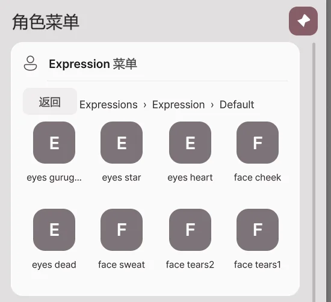
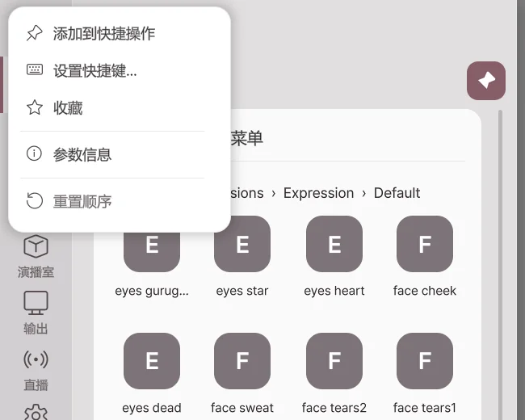
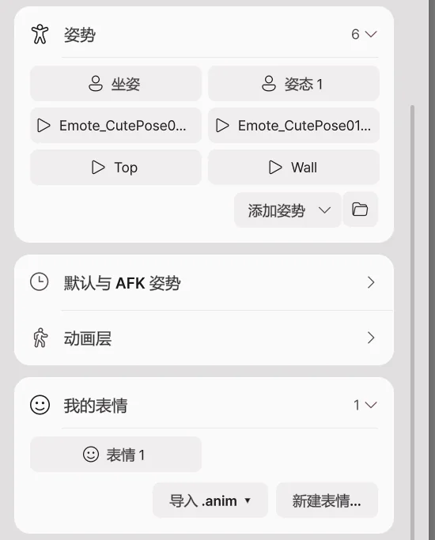
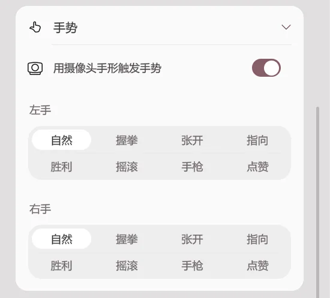

角色菜单
使用服装、发型、表情等由角色制作人添加的功能。根据模型，菜单名称和项目会有所不同。
更换服装和表情

| 操作 | 运行方式 |
|---|---|
| 开/关 | 按一次开启，再按一次关闭。主要用于更换服装或装饰。 |
| 按下按钮 | 仅在按下时有效。松开则取消。 |
| 圆形滑块 | 移动手柄以设置 0~100% 之间的数值。连接的颜色、大小、表情强度等会发生变化。 |
| 方向键 | 手柄可以左右、上下移动，同时调整多种表情或数值。 |
| 文件夹 | 打开子菜单。按返回键可回到上级菜单。 |
快速取用常用项目

- 收藏夹：在菜单上方快速查找。
- 添加到快速操作：在底部工具栏创建一个执行按钮。
- 快捷键指定：使用键盘执行该项目。
在快捷键中，按住时按键松开就会取消，而切换模式则会保持，直到再次按下为止。
姿势与跟踪

- 点击姿势图块以应用。
- 点击姿势旁的相机图标展开追踪设置。
- 分别开启或关闭面部、头部、手臂、手指、身体。
开启的部位会跟随我的动作，关闭的部位则保持已保存的姿势。例如关闭头部并开启面部时，只会移动表情而头部保持固定。
手势

选择左手和右手的拳头、剪刀、张开等手势。如果角色手型与表情绑定，表情也会随手势变化。当通过摄像头启用手势时，将使用真实手型。
我的表情
通过创建新表情调整面部形状并保存，或加载 .anim 表情文件。创建的表情可通过图块应用，并通过右键连接至快速操作或快捷键。请在创建表情中查看操作步骤。
层级结构和形态键
- 层级结构：以树状显示角色部件。可通过勾选控制部件的开关。
- 眼睛图标：保持部件运行，但只在屏幕上隐藏。
- 网格：搜索用于绘制外观的部件。
- 形状键：可以直接调节脸部或身体的变形量。直接设定的数值可能优先于追踪。
恢复
在角色参数 → 点击恢复到默认值，服装·表情等菜单的数值将恢复为角色的默认值。